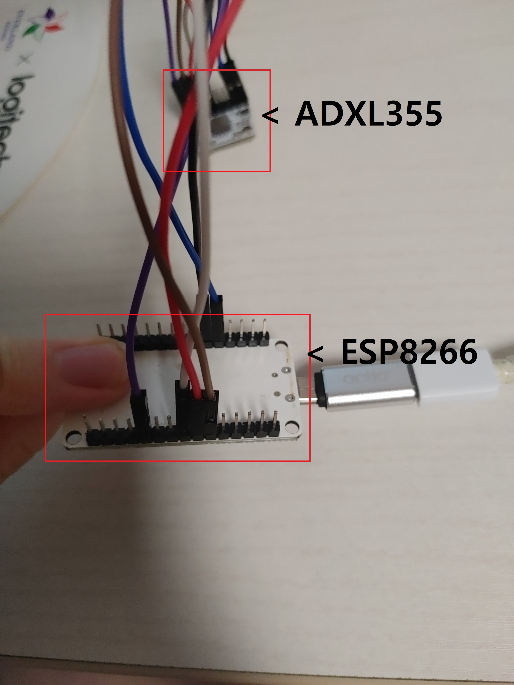

보급형 지진동 감지기
2023년 11월 11일
어느 행안부 소속 하청인지 뭔지 기관에서 MEMS 가속도계로 지진동을 감지하는 저가형 제품을 만들었는데
소프트웨어를 제외한 하드웨어는 다 자체제작이 아니었다...
물론 나는 PCB도 안만들거고 브레드보드로 만들거지만

테스트 하려는 모습이다 '사진에 보이는 것만'
합쳐서 6만원이나 하는게 참 비싸다..
테스트 영상
매우 잘된다 다른 감지기도 만들어보자 이제는 LCD도 달고 버튼도 달고 그나마 '감지기'라는 모습이 나오는 듯 하다.
위 사진은 다른 지진동 감지기인데 성능은 위에꺼 보다 떨어지지만 보급형이라는 말이 어울릴 정도로 저렴하다 45000원 정도이니.... 다른방식으로 지진동을 감지하는 센서도 있는데
바로 위 사진에있는 센서이다.
MEMS가 아닌 자성을 이용하여 저항이 달라지는 원리를 이용한 지오폰으로 대략 2만 3천원이면 구할 수 있다. 총 가격은 4만원쯤 제일 저렴한것이 아이러니하다... 그러나 센서가 강한 진동을 감지 할 수는 없는 것이 유일한 단점